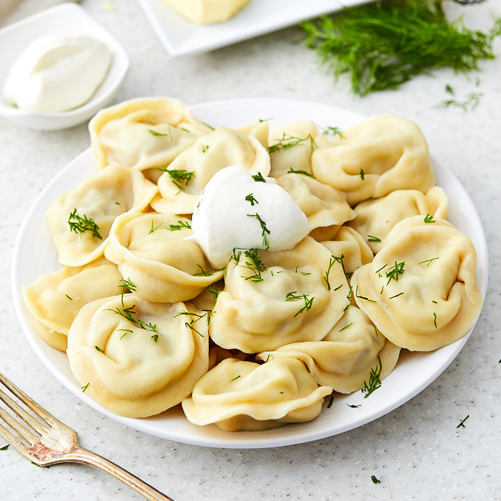

Back to home page
Musaka Recipe

Musaka recipe ingredients
This is a simple yet delicious recipe for bulgarian Musaka.
It's origins are from the Plovdiv region. It is best served with bulgarian yogurt!
Ingredients
- 0.5 kg mince meat
- 1kg potatos
- 2 eggs
Cooking steps
- cooking the mince
- the meat sauce, a rich Bolognese type sauce made with lamb or beef but with traditional Greek flavours of oregano and cinnamon;
- thick béchamel sauce - thicker than used in Lasagna and things like Broccoli Gratin, it's semi-set using eggs;
Pelmeni

Pelmeni recipe ingredients
This is a simple yet delicious recipe for russian Pelmeni.
It's origins are from the Russia. It is best served with mayonese and hrenovina.
Ingredients
- 0.5 kg mince meat
- dough
- hrenovina an mayonese
Cooking steps
- boil them
- separate them from the water
- pour hrenovina and mayo with some black pepper
Boiled Eggs
Boiled Eggs ingredients
This is a simple yet delicious recipe for boiled eggs.
Ingredients
- 5 eggs
- 2 lt of water
- salt
Cooking steps
- boil the water
- put the eggs in it and wait 10min
- peel the shells, pour some salt on top and enjoy